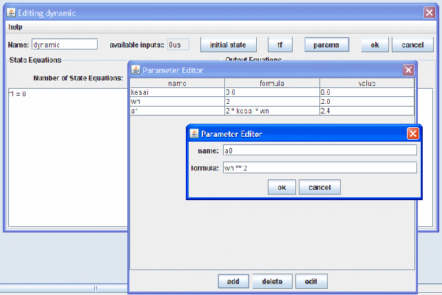
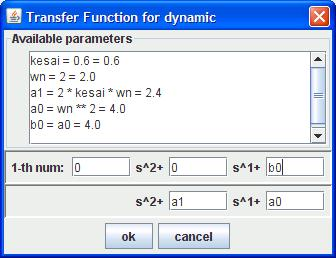
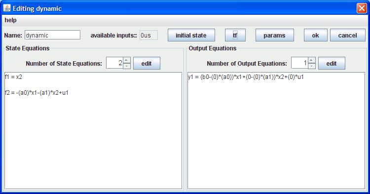

When establishing a model for a linear system, you can choose to do so by entering its transfer function: 1.Press the “params” button to prepare parameters 
2.press the “tf” button, to enter the transfer function of the system 
3.and choose “ok”, the model would be created 